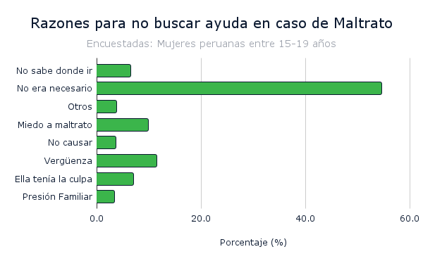
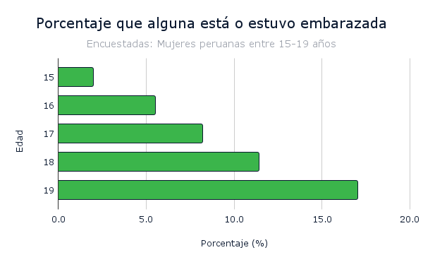
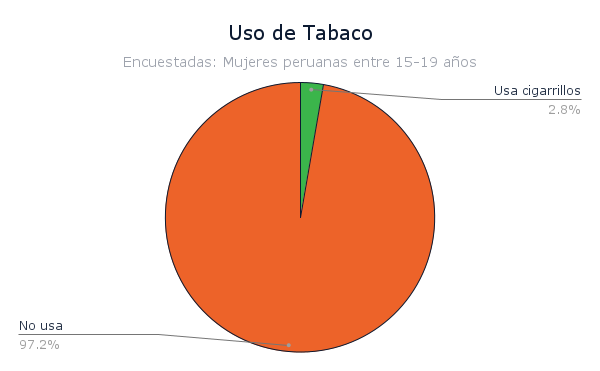
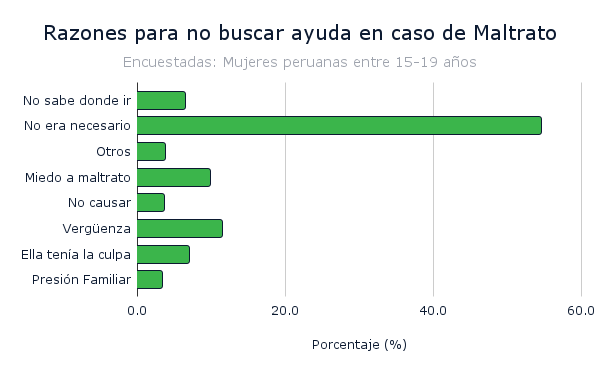
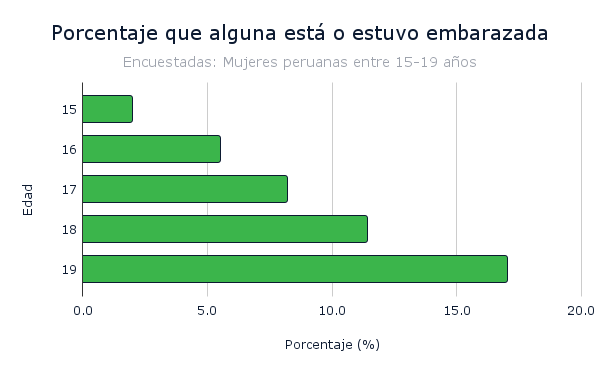
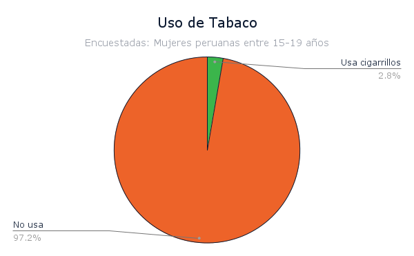

Estadisticas de los Adolescentes
Esta gráfica representa la evolución de la población adolescente en Perú desde 1995 hasta 2024, dividida por grupos de edad de 10 a 17 años. Se observa un crecimiento inicial significativo en la mayoría de los grupos de edad, seguido de una estabilización y, en algunos casos, ligeros descensos hacia los años más recientes. Base de datos: (Instituto Nacional de Estadística e Informática)
Los datos sobre las denuncias por violencia sexual a menores de edad en Perú revelan una tendencia alarmante de aumento constante en los últimos años. Desde 2014 hasta 2022, se observa un incremento significativo en el número de denuncias, pasando de 4,043 en 2014 a 6,662 en 2022. Este aumento podría reflejar una mayor conciencia y disposición para reportar casos de violencia sexual, así como una preocupante realidad de aumento en este tipo de delitos. La cifra de 6,662 denuncias en 2022 subraya la urgencia de abordar este problema de manera efectiva y sistemática. Es fundamental implementar políticas públicas más robustas, programas educativos más amplios y acceso a servicios de apoyo psicológico y legal para las víctimas. Además, es crucial fortalecer los sistemas de justicia para garantizar que los perpetradores sean responsabilizados y que las víctimas reciban el apoyo necesario. Estos datos también destacan la necesidad de un compromiso colectivo para prevenir la violencia sexual desde las edades más tempranas, promoviendo valores de respeto, consentimiento y dignidad en todas las esferas de la sociedad. Base de datos: (Instituto Nacional de Estadística e Informática)


 




